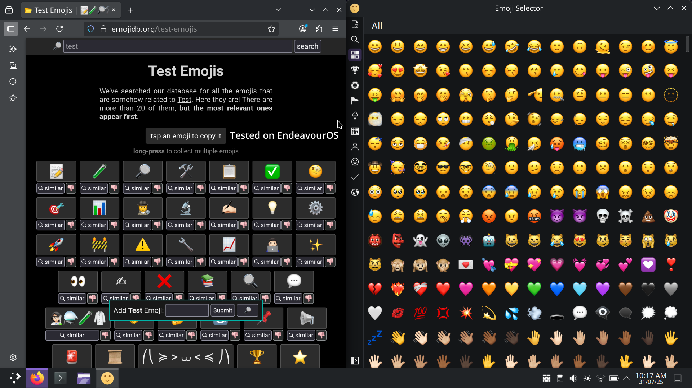

Bring macOS emoji vibes to your Linux terminal üòé
git clone https://github.com/Aarnav-Tech/apple-color-emoji-installer.git
cd apple-color-emoji-installer
chmod +x install_apple_emoji.sh
sudo ./install_apple_emoji.sh
Reboot or log out to apply the emoji changes.
Here's what your system will look like after installing Apple Emoji:
